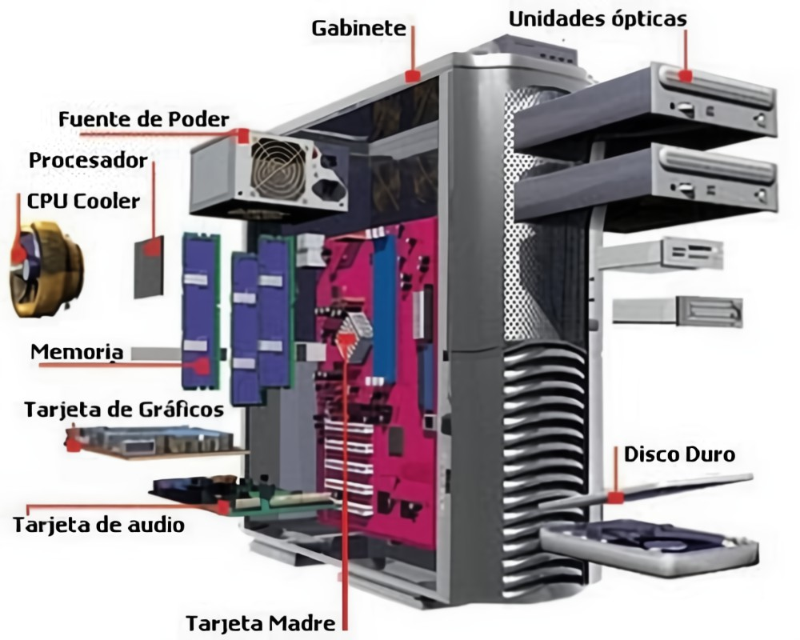

Adrian Arredondo Ruiz
Arquitectura de computadoras
La arquitectura de computadoras es el diseño conceptual y la estructura operacional fundamental de un sistema de computadoras. Es decir, es un modelo y una descripción funcional de los requerimientos y las implementaciones de diseño para varias partes de una computadora, con especial interés en la forma en que la unidad central de proceso (CPU) trabaja internamente y accede a las direcciones de memoria.
Unidad 1
Arquitecturas de computadoras
Conoceremos el como esta compuesta una computadora, desde sus componentes mas basicos hasta los mas complejos

Unidad 2
Estructura y funcionamiento del CPU
CPU es la abreviación de Unidad Central de Procesamiento, un componente básico de todo dispositivo que procesa datos y realiza cálculos matemáticos-informáticos.
Unidad 3
Selección de componentes para ensamble de equipo de cómputo.
Conoceremos un poco mas a fondo sobre los componentes fundamentales para el momento de construir o comprar un equipo de computo
Unidad 4
Procesamiento Paralelo.
La computación paralela es una forma de cómputo en la que muchas instrucciones se ejecutan simultáneamente, operando sobre el principio de que problemas grandes, a menudo se pueden dividir en unos más pequeños, que luego son resueltos simultáneamente (en paralelo).